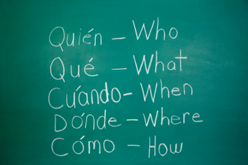

|
Spanish is an accelerated course that focuses on a connected approach to student learning. Students read texts and engage in activities that inspire thoughtful conversation, discussion, and debate.
In the United States, ninth grade is usually the first year in high school (called "upper secondary school" in other countries). In this system, ninth graders are also often referred to as freshmen. The typical age for U.S. 9th grade students is 14 to 15 years.
In the Spanish curriculum, most schools still have the same levels of basic courses, advanced courses, and honors courses. The basic level for a 9th grader is often listed as Spanish I (may also be called Spanish 9). This course will often teach the fundamentals of higher-level literature and how to analyze and respond to such literature. The advanced course is often English II (may also be called English 10) and is usually a genre studies type of Spanish class, but it may instead be focused on one type of literature, such as American literature or British Literature. The honors level for 9th grade is usually Spanish III (may also be called Spanish 11) and is usually focused on one type of literature (i.e. Spanish Literature, Vocabulary), but if this was already covered it previous classes, it may be a genre study English course. Although rare, a district or school may allow a student to take AP their 9th grade year.
Students will encounter authors' perspectives as they read literature from across time periods and cultures. Students will listen to the perspectives of their peers through conversations and collaborative activities. As students read the literature and engage in activities, they will formulate--and defend--their opinions as they develop their own perspectives.
Course objectives: By the end of this course, students will be able to:
- apply critical reading strategies to increase understanding of texts
- write for a variety of purposes
- confidently lead and/or participate in discussions
The focus of Language and Composition is on the development and revision of evidence-based analytic and argumentative writing and the rhetorical analysis of nonfiction texts.
The focus of Spanish Literature and Composition is on reading, analyzing and writing about Imaginative literature from various periods.
|